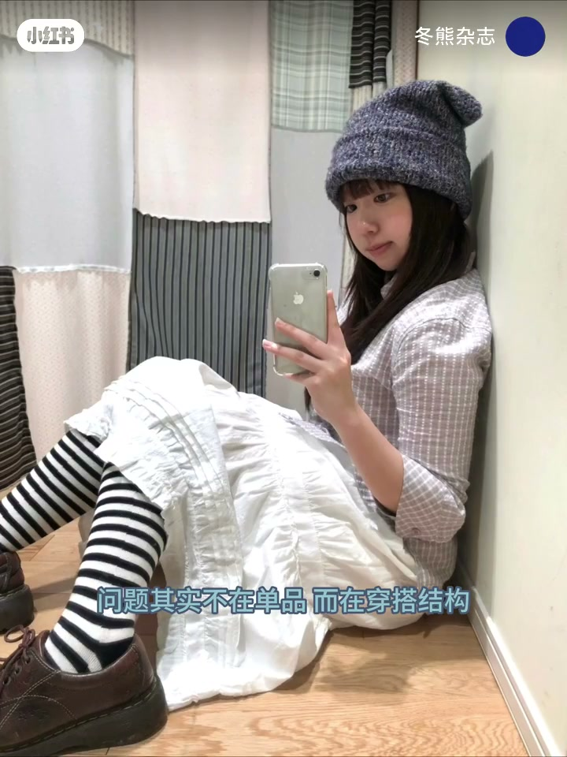
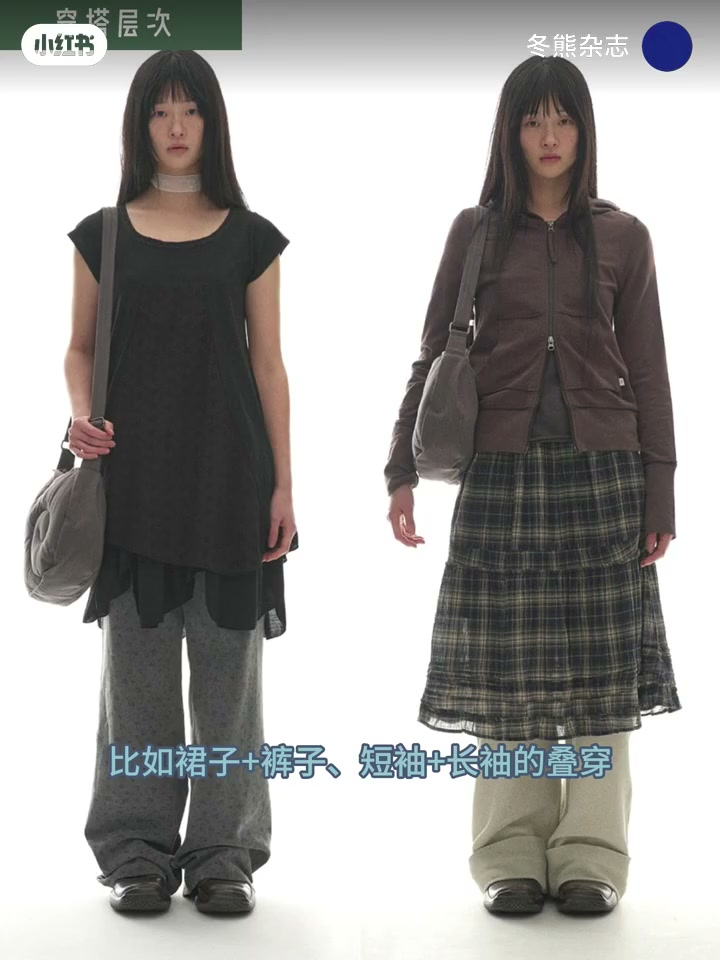
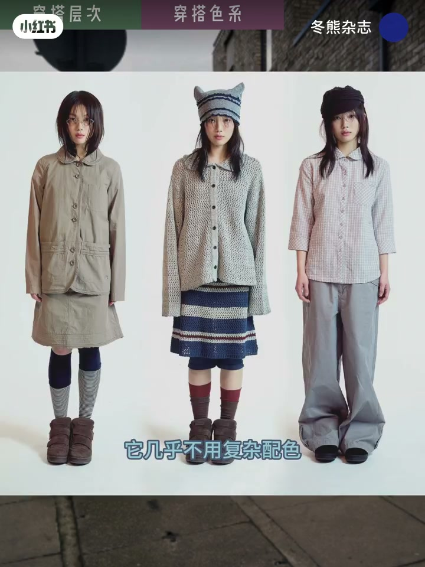
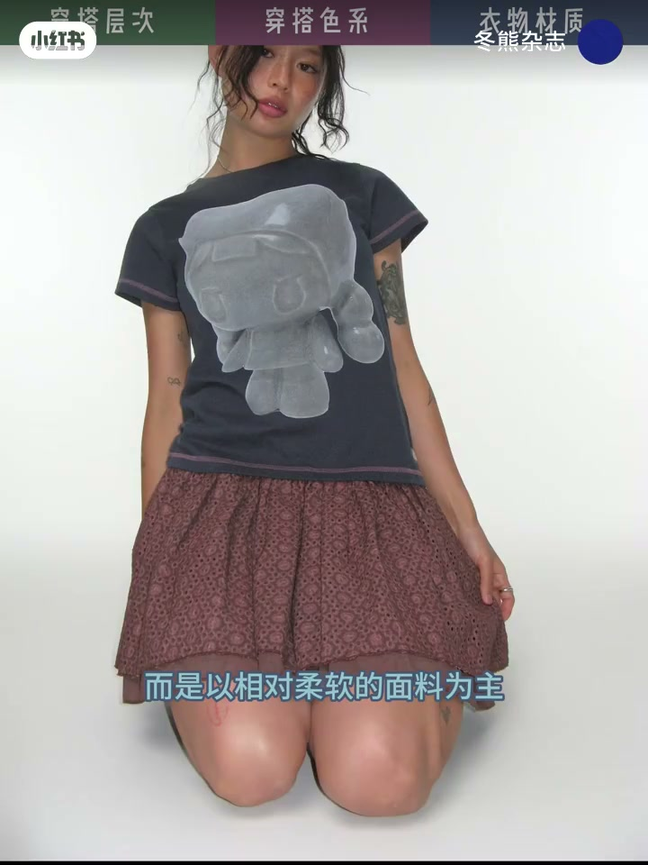
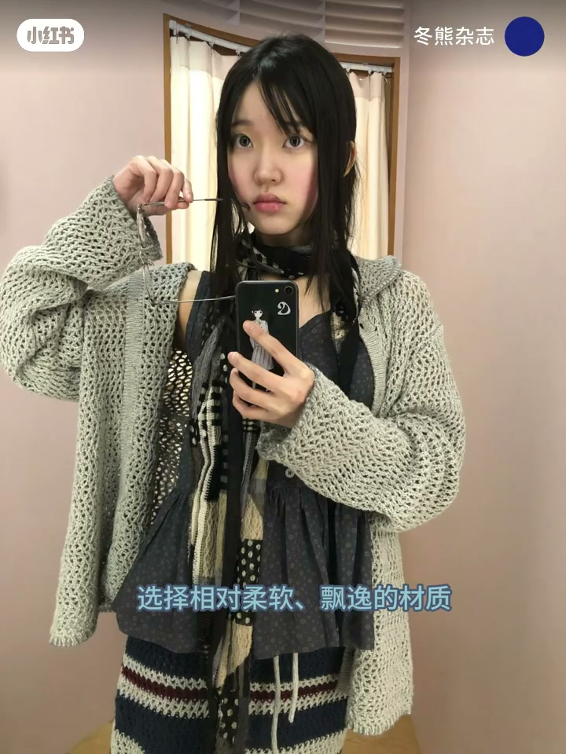

内容要点
为什么 Coyseio 看起来很简单却很有风格，衣柜里类似单品却穿不出那种氛围感？冬熊杂志拆解其 Lookbook，把问题从「缺单品」改写成「缺穿搭结构」，并给出三条灵感：用叠穿与配饰做干净的纵向层次，而不是死磕显瘦；以低饱和为基本色、高饱和只做点缀，善用同色系与色块碰撞；材质走柔软路线——针织、卫衣、蕾丝，连牛仔也用百褶、圆角去硬。收尾给日常复刻顺序：低饱和单品 → 柔软飘逸材质 → 简单层次 → 配饰提丰富度。
知识结构
问题不在单品在结构；少强调显瘦，用裙+裤、短袖+长袖叠穿与领巾帽袜等配饰做层次，保持干净纵向线条更松弛。
低饱和是基本色调，几乎不用复杂配色；高饱和只在配饰或占比轻的单品；同色系搭配加色块碰撞，有趣但不乱。
少用硬朗面料，主打针织卫衣蕾丝；牛仔用百褶、圆角柔化。日常从低饱和、柔软材质、简单叠穿与配饰入手，下期预告相似设计师品牌。
Coyseio 感来自结构而不是单品堆叠：纵向干净的层次、低饱和底盘加点缀色、柔软材质柔化硬朗单品。想靠近这种甜酷亚系，先改搭配逻辑，再买新衣服。
00:00-00:32灵感一：穿搭层次——碰撞氛围，而不是死磕显瘦
开场点破错位：Coyseio 看起来简单却很有风格，很多类似单品你衣柜里都有，却穿不出氛围感——「问题其实不在单品而在穿搭结构。」冬熊通过拆解 Lookbook，总结三条灵感指南。
第一是穿搭层次：很少强调显瘦，而是用单品碰撞营造氛围感——裙子加裤子、短袖加长袖的叠穿，再用领巾、帽子、袜子等配饰丰富视觉；但整体仍是干净的纵向线条，所以看起来更松弛。


00:32-00:49灵感二：穿搭色系——低饱和底盘，高饱和只做点缀
第二是穿搭色系：低饱和是品牌基本色调，几乎不用复杂配色；高饱和也只出现在配饰或占比不重的单品中。
同时 Coyseio 善于同色系的巧妙搭配，并用色块碰撞让穿搭不无聊、更有趣——克制与趣味靠面积分配，而不是靠堆很多颜色。

00:49-01:24灵感三：衣物材质——柔软为主，牛仔也要被柔化
第三是衣物材质：很少用硬朗材质制衣和搭配，而以相对柔软的面料为主，比如针织、卫衣，以及多次被巧妙利用的蕾丝。即便牛仔单品，也会用百褶、圆角等设计去柔化，突出一贯的少女气质。
日常想更接近 Coyseio 感：先从低饱和度单品入手，选相对柔软飘逸的材质，尝试简单的层次感叠穿，并用配饰提高丰富度。片尾预告下期将推荐相似风格的设计师品牌与店铺。


完整转录（35段）
以下文本由 Whisper medium 模型自动转录，可能存在少量识别误差，已尽可能修正。
为什么Coiseo看起来很简单却很有风格
甚至很多单品你衣柜里都有类似的
但就是穿不出这种氛围感
问题其实不在单品而在穿搭结构
大家好我是东雄
今天通过拆解Coiseo的Lookbook
为大家总结了这类穿搭的三个灵感指南
第一是穿搭层次
它很少强调显瘦
而是利用单品之间的碰撞营造氛围感
比如裙子加裤子、短袖加长袖的叠穿
以及通过领巾、帽子、袜子等配饰
丰富视觉层次
但整体都是一个很干净的纵向线条
所以看起来会更松弛
第二是穿搭色系
你会发现低饱和是品牌的基本色调
它几乎不用复杂配色
而高饱和也只出现在配饰或占比不重的单品中
同时Coiseo也很善于同色系的巧妙搭配
并利用色块碰撞让穿搭变得不无聊、更有趣
第三是衣物材质
Coiseo很少使用硬朗材质去制衣和搭配
而是以相对柔软的面料为主
比如针织、卫衣以及多次被巧妙利用的蕾丝元素
即使牛仔单品也会利用百折、圆胶等设计去进行柔化
突出品牌一贯的少女气质
所以如果你想在日常穿搭中更接近Coiseo感
不妨先从一些低饱和度的单品入手
选择相对柔软飘逸的材质
尝试一下简单的层次感叠穿
并利用配饰提高丰富度
那本期就先到这里
下期准备推荐一些和Coiseo相似风格的设计师品牌与店铺
感兴趣的可以持续关注